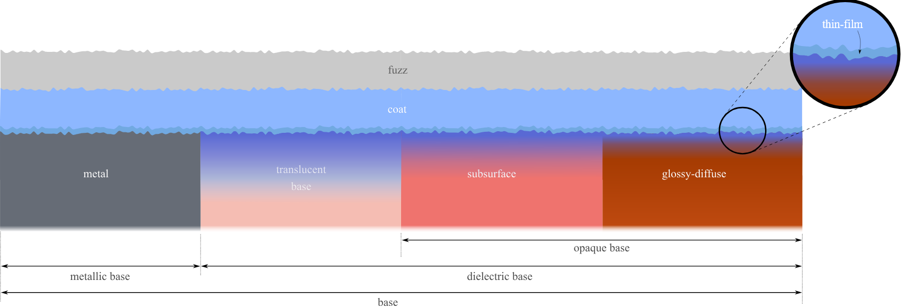

Kapitel 3: Das Materialmodell & Mapping
Zielsetzung: Die Brücke von der Theorie zur praktischen Anwendung. Während im vorherigen Kapitel die mathematischen Grundlagen der Cook-Torrance-BRDF beleuchtet wurden, widmet sich dieses Kapitel der Materialsteuerung, die in den interaktiven Babylon.js-Demos der Webseite verwendet wird. Im Mittelpunkt stehen Base Color, Metallic, Roughness und Texture Maps – und warum für eine realistische Darstellung im nächsten Schritt zusätzlich komplexes Licht (IBL) nötig sein wird.
1. Von Cook-Torrance zur Babylon.js-Materialsteuerung
Im vorherigen Kapitel wurden die physikalischen Prinzipien und die Cook-Torrance-BRDF hergeleitet. Zur Erinnerung, die Formel für den gerichteten (spekularen) Anteil lautet:
\[ f_s = \frac{D \cdot F \cdot G}{4 \, (\mathbf{n} \cdot \mathbf{l}) \, (\mathbf{n} \cdot \mathbf{v})} \]
Dort wurden Aspekte wie die Mikrofacetten-Verteilung (\(D\)), der Fresnel-Effekt (\(F\)) und die geometrische Abschattung (\(G\)) bereits betrachtet. Diese Begriffe bleiben auch in der praktischen Umsetzung relevant. In einer Echtzeit-Engine wie Babylon.js wird die Formel jedoch nicht direkt durch die Anwender manipuliert. Stattdessen werden wenige Materialparameter gesetzt, aus denen die Engine intern eine PBR-Beleuchtung berechnet.
In den folgenden Beispielen wird diese Abstraktion anhand des in Babylon.js verfügbaren PBRMetallicRoughnessMaterial betrachtet. Dieses Material stellt die für den Metal-Roughness-Workflow typischen Eingaben baseColor, metallic, roughness und metallicRoughnessTexture bereit. Dadurch kann an die theoretischen Begriffe aus Kapitel 2 angeschlossen werden, ohne die BRDF-Terme direkt einstellen zu müssen.
Für die Demonstration sind insbesondere diese Parameter relevant:
baseColor/baseTexture: Definiert die farbliche Materialinformation. Die Bedeutung dieser Farbe hängt davon ab, ob ein Pixel als Metall oder Nichtmetall interpretiert wird.metallic: Bestimmt, ob ein Material eher als Dielektrikum oder als Metall behandelt wird. Nichtmetalle besitzen einen diffusen Anteil, Metalle dagegen praktisch nicht.roughness: Steuert die Rauheit der spekularen Reflexion. Ein niedriger Wert erzeugt scharfe Glanzlichter, ein hoher Wert breitere und mattere Reflexionen. Damit wird anschaulich vor allem die Mikrofacettenverteilung aus dem \(D\)-Term sichtbar.metallicRoughnessTexture: Speichert Metallic- und Roughness-Werte als Texture Map. In Babylon.js liegt Roughness im grünen Kanal und Metallic im blauen Kanal.
Die Parameter bilden damit eine praktische Steuerungsebene über der zuvor beschriebenen BRDF. Statt \(D\), \(F\) und \(G\) direkt einzustellen, werden Materialeigenschaften gewählt, aus denen die Engine die Reflexionen plausibel approximiert.
Base Color und Albedo-Maps
In Kapitel 2 wurde die Albedo bereits als \(c\) im diffusen Lambert-Anteil eingeführt. Im praktischen PBR-Workflow bezeichnet sie die Grundfarbe einer Oberfläche unter neutraler Beleuchtung. In Babylon.js wird dafür bei der Metal-Roughness-Variante der Parameter baseColor bzw. eine baseTexture verwendet. Gemeint ist also nicht das fertig sichtbare Bild inklusive Schatten, Glanzpunkten oder Umgebungsreflexionen. Diese Effekte werden erst durch Beleuchtung, BRDF und Umgebung erzeugt.
Der Rückbezug zur Cook-Torrance-Formel ist hierbei weniger direkt als bei roughness. Zunächst muss zwischen dem diffusen Anteil \(f_d\) und dem spekularen Cook-Torrance-Anteil \(f_s\) unterschieden werden. Die Albedo erscheint nicht als zusätzlicher eigener Faktor neben \(D\), \(F\) und \(G\). Bei Dielektrika wird sie vor allem für den diffusen Anteil verwendet, vereinfacht also für die Körperfarbe des Materials. Bei Metallen wird der diffuse Anteil dagegen nahezu entfernt; die Base Color wird dann als farbige spekulare Basisreflektivität interpretiert. Über metallic wird also entschieden, wie die Farbinformation ausgewertet wird.
Für die Erstellung von PBR-Texturen ergibt sich daraus eine wichtige Regel: In eine Albedo-Map sollten keine bereits “eingebackenen” Schatten oder Highlights gemalt werden. Solche Informationen würden später ein zweites Mal durch das Beleuchtungsmodell entstehen und das Material unphysikalisch wirken lassen. Eine Holztextur darf also Maserung und Farbunterschiede enthalten, aber keine festen Lichtflecken. Eine Metalltextur darf unterschiedliche Färbungen oder Oxidation zeigen, aber keine vorgerenderten Spiegelungen.
Die Bedeutung der Base Color hängt zusätzlich vom Wert metallic ab:
- Bei Dielektrika (z.B. Holz, Kunststoff, Stein) beschreibt die Albedo-Map die diffuse Körperfarbe. Das Material besitzt weiterhin einen schwachen, meist fast weißen Spekularanteil.
- Bei Metallen beschreibt die Base Color nicht eine diffuse Farbe, sondern die Färbung der spekularen Reflexion. Deshalb erscheinen Metalle wie Gold oder Kupfer farbig glänzend, besitzen aber praktisch keinen diffusen Anteil.
Eine Albedo- bzw. Base-Color-Map ist damit nicht einfach ein dekoratives Bild auf dem Objekt. Sie ist ein physikalisch interpretierter Eingabeparameter des Materialmodells. Erst im Zusammenspiel mit Metallic- und Roughness-Maps wird festgelegt, ob ein Pixel als raues Holz, blankes Metall oder matter Lack ausgewertet wird.
2. Interaktive Demo: Globale Parameter vs. Texture Maps
Die folgende Szene zeigt diese Babylon.js-Parameter in einer bewusst einfachen Beleuchtungssituation. Auf Umgebungskartierung (IBL) wird zunächst verzichtet; stattdessen werden kontrollierte Testlichter verwendet. So kann der Unterschied zwischen globalen Materialwerten und Texture Maps isoliert betrachtet werden. Rauheit beeinflusst die Mikrofacettenverteilung, Metallizität verändert die Aufteilung zwischen diffusem und spekularem Verhalten, und die Base Color liefert die farbliche Materialinformation.
Um diese Steuerung zu demonstrieren, wird ein klassisches Beispiel der Computergrafik verwendet: ein Holzfass. Ein solches Fass weckt klare Erwartungen – das Holz sollte eher rau und farbig (Dielektrikum) sein, während die Eisenbänder als metallisch und spiegelnd wahrgenommen werden sollten.
(A) Globale Werte: Im einfachsten Fall werden konstante Werte für das gesamte Objekt gesetzt: eine einheitliche baseColor, ein metallic-Wert und ein roughness-Wert. In der Demo wird die Base Color über ein Farbfeld gewählt, während Metallic und Roughness per Slider verändert werden.
(B) Texture Maps: Für ein mehrteiliges Objekt reichen globale Werte nicht aus. Bei Klick auf “Aktivieren (Maps laden)” werden die globalen Eingaben deaktiviert und stattdessen Texturen verwendet. Die baseTexture legt die lokale Grundfarbe von Holz und Eisen fest. Die metallicRoughnessTexture steuert zusätzlich pro Texel, welche Bereiche metallisch sind und wie scharf oder diffus sie Licht reflektieren. Dadurch erhält jeder Bildpunkt eigene Materialparameter, z.B. “Holz: nichtmetallisch und rau” oder “Eisenring: metallisch und glatter”.
Die Demonstration wird mit Babylon.js umgesetzt. Die Begriffe bleiben deshalb bewusst bei der Babylon.js-Metal-Roughness-Konvention. Für den Rückbezug zur Theorie ist entscheidend:
| Babylon.js | Bedeutung in der Demo | Rückbezug zu Kapitel 2 |
|---|---|---|
baseColor / baseTexture |
Grundfarbe ohne eingebackene Beleuchtung | beeinflusst den diffusen Anteil bzw. bei Metallen die Farbe der spekularen Reflexion |
metallic |
Mischung zwischen Nichtmetall und Metall | verändert die Gewichtung zwischen diffusem und spekularem Verhalten |
roughness |
Rauheit der Oberfläche | beeinflusst die Breite der spekularen Reflexion und damit die Wirkung des \(D\)-Terms |
Die Presets in der Demo setzen gezielt Grenzfälle mit gleicher Base Color. Dadurch wird sichtbar, dass die Farbe je nach metallic-Wert entweder als diffuse Körperfarbe oder als farbige spekulare Reflexion ausgewertet wird.
Aus (Globale Parameter aktiv)
0.00
0.40
3. Exkurs: OpenPBR und MaterialX
Der Metal-Roughness-Workflow ist nicht die einzige Möglichkeit, PBR-Materialien zu beschreiben. OpenPBR verfolgt einen allgemeineren Ansatz: Es ist kein Babylon-Material, sondern ein offener Surface-Shading-Standard der Academy Software Foundation. Er soll als gemeinsame Materialbeschreibung zwischen Anwendungen und Renderern dienen.
OpenPBR organisiert Materialien allgemeiner als der hier verwendete Metal-Roughness-Basisfall. Neben einer Basisschicht aus Metall oder Dielektrikum werden unter anderem optionale Schichten wie Coat und Fuzz beschrieben.

Für weiterführende Experimente ist vor allem MaterialX relevant. Die OpenPBR-Spezifikation stellt eine MaterialX-Referenzimplementierung bereit; der MaterialX Web Viewer kann MaterialX-Materialien direkt im Browser anzeigen. Der Exkurs ordnet damit ein, dass PBR-Workflows über die hier gezeigte Echtzeit-Demo hinaus auch als offene, anwendungsübergreifende Materialstandards formuliert werden.
4. Die Grenzen der isolierten Beleuchtung: Der Übergang zu IBL
Nach dem Exkurs wird wieder die Babylon.js-Demo aus Abschnitt 2 betrachtet. Dort zeigt sich eine wesentliche Grenze der isolierten Beleuchtung: Sobald Teile des Fasses stark metallisch werden, etwa die Eisenringe in der Texture Map, hängt ihr Erscheinungsbild stark von Blickwinkel und Position der gesetzten Lampen ab. Einzelne Glanzlichter werden sichtbar, dazwischen fehlen jedoch die Reflexionen einer realen Umgebung.
Das ist physikalisch plausibel: Metalle verhalten sich näherungsweise wie Spiegel. Ein Spiegel in einem nur lokal beleuchteten Raum kann vor allem die vorhandenen Lichtquellen zeigen; ohne Umgebung bleibt ein großer Teil der Reflexion informationsarm.
Damit die Babylon.js-PBR-Materialparameter plausibel sichtbar werden, wird eine realistische Umgebung benötigt, die Lichtdaten aus vielen Richtungen liefert. Besonders metallische Bereiche spiegeln nicht nur einzelne Lampen, sondern ihre Umgebung. Diese Lücke schließt das Konzept des Image Based Lighting (IBL), was im folgenden Kapitel detailliert ausgeführt und demonstriert wird.